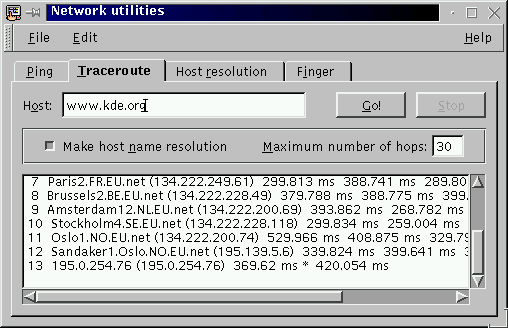

Next Previous Table of Contents
The
traceroute(8) command
prints the route that packets take to network host. The Traceroute tab
allows the execution of the traceroute(8) command.

The Internet is a large and complex aggregation of network hardware, connected
together by gateways. Tracking the route one's packets follow (or finding the
miscreant gateway that's discarding your packets) can be difficult. Traceroute
utilizes the IP protocol time to live field and attempts to elicit an
ICMP TIME_EXCEEDED response from each gateway along the path to some
host.
Print hop addresses numerically rather than symbolically and numerically (this saves a nameserver address-to-name lookup for each gateway found on the path).
Set the max time-to-live (maximum number of hops) used in outgoing probe packets. The default is 30 hops (the same default used for TCP connections).
This program attempts to trace the route an IP packet would follow to
some internet host by launching UDP probe packets with a small ttl
(time to live) then listening for an ICMP "time exceeded"
reply from a gateway. We start our probes with a ttl of one and
increase by one until we get an ICMP "port unreachable"
(which means we got to "host") or hit a max (which defaults
to 30 hops and can be changed with the Maximum number of hops
option). Three probes are sent at each time-to-live setting and a line
is printed showing the time-to-live, address of the gateway and round
trip time of each probe. If the probe answers come from different
gateways, the address of each responding system will be printed. If
there is no response within a 3 seconds timeout interval, a "*" is
printed for that probe.
We don't want the destination host to process the UDP probe packets so the destination port is set to an unlikely value.
This program is intended for use in network testing, measurement and management. It should be used primarily for manual fault isolation. Because of the load it could impose on the network, it is unwise to use traceroute during normal operations or for too long.
Implemented by Van Jacobson from a suggestion by Steve Deering. Debugged by a cast of thousands with particularly cogent suggestions or fixes from C. Philip Wood, Tim Seaver and Ken Adelman.
Next Previous Table of Contents